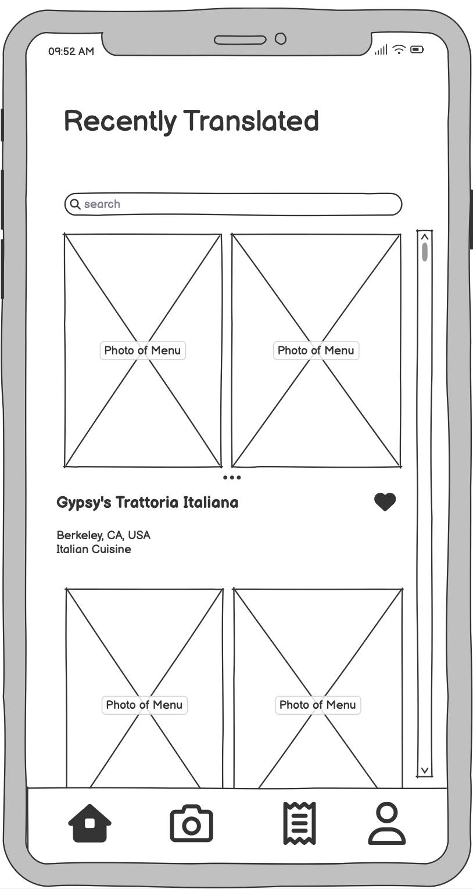
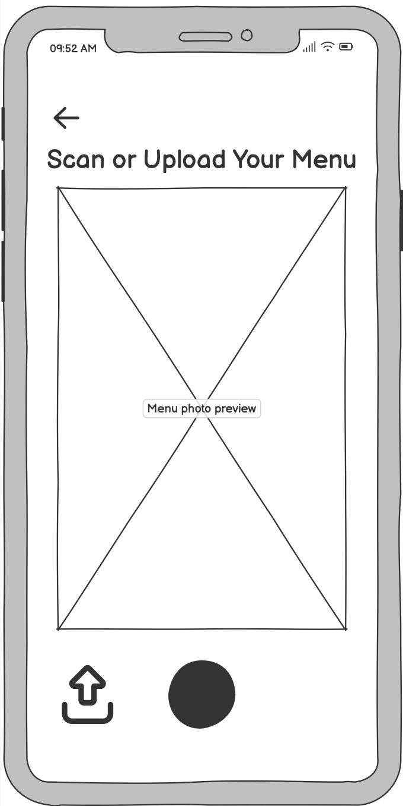
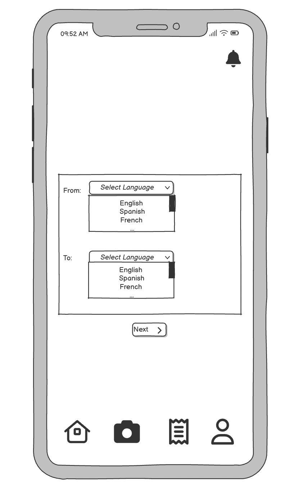
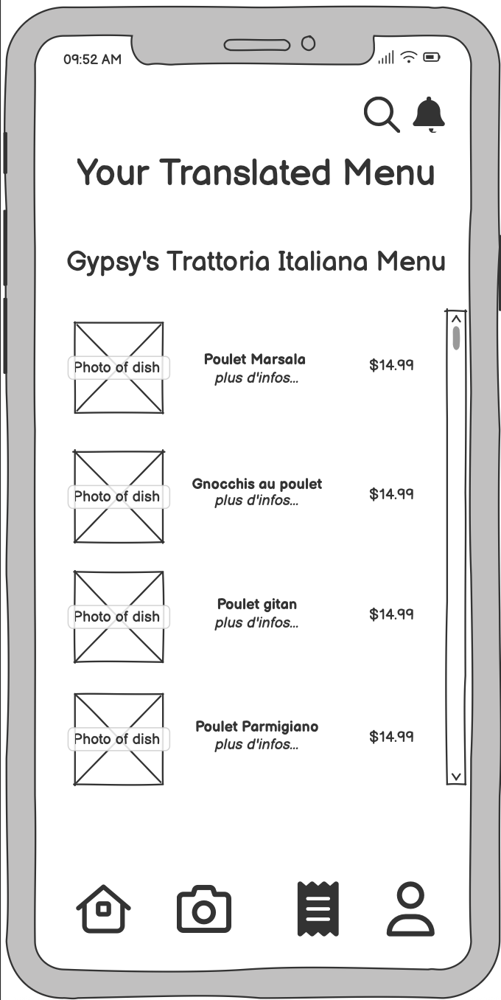
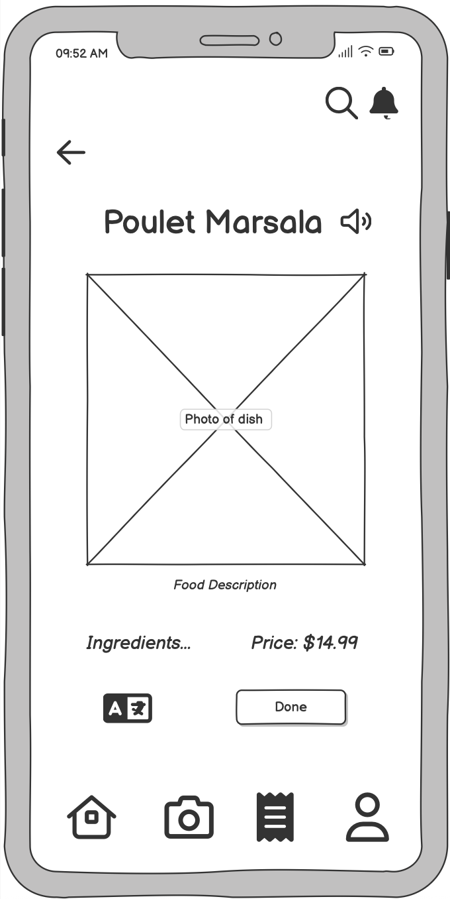
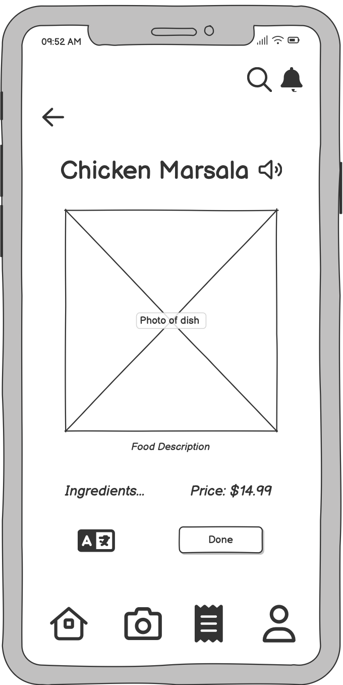

A menu-translation app that helps travelers confidently order from menus written in a language they can't read.
Travelers and adventurous eaters regularly face menus in languages they can't read, often with no pictures, vague descriptions, and hidden ingredients that matter for allergies and dietary preferences.
Existing tools like generic photo translators aren't built for menus, so people fall back on guessing, asking strangers, or searching dish photos online. In our interviews, some spent 10 to 15 minutes on a single order and still walked away unsure. LingoBite reframes the problem around the menu itself: scan it, understand it, and order with confidence.
We ran interviews with people who travel and eat across cuisines. A consistent set of pain points surfaced across nearly every conversation.
Point your camera at a menu and LingoBite turns it into something you can read, compare, and trust.
Capture a menu photo or upload from your gallery, then crop to just the section you want.
Translate between languages with a familiar to/from toggle, plus audio to hear the pronunciation.
See what's actually in a dish to avoid allergens and match dietary preferences.
Save dishes you love so they're easy to find the next time you're deciding.
Rate and note dishes to remember what worked and help other diners.
Browse menus other users have already translated for nearby restaurants.
The core flow was prototyped and put through usability testing. These are the key screens.






The project followed a structured design-thinking arc from problem definition to tested prototype.
Empathy mapping, a needs statement, and user interviews to define the real problem behind unreadable menus.
Ideation, information architecture, and an interactive wireframe prototype of the full menu-to-order flow.
Think-aloud usability tests and concept testing, then iterating on the design based on what we observed.
Usability sessions surfaced concrete, actionable issues, each of which fed directly into design revisions. Testers found the camera scan fast and the favorites feature valuable.